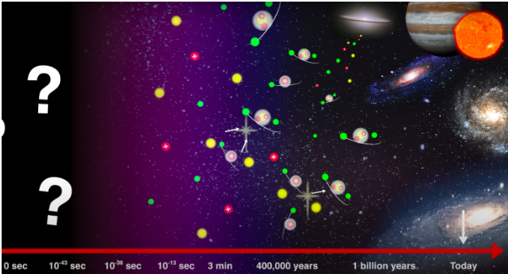
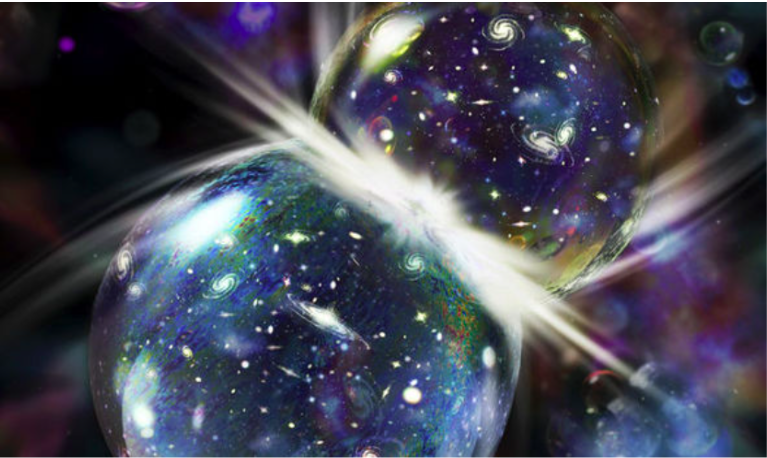

The Big Bang Theory
Most people think that the Big Bang was a singularity (a single point with infinite density and mass) so dense that it broke apart and started expanding, forming the universe we see today. That is an absolute misconception; and hopefully, a misconception that I am able to clarify in this article. Here, I aim to clarify and to communicate everything we know about the Big Bang Theory. First of all, let me tell you what we know for sure.
Confirmed
Firstly, we know, with certainty, that the visible universe was a lot smaller, denser, and hotter than it is right now. It was extremely miniscule, but not of zero size (which is another misbelief). Secondly, we know that the universe started expanding at a specific time, which was approximately 13.8 billion years ago.
The Cosmic Microwave Background Radiation
Before we discuss the events that occurred at specific time intervals - the ones we know for sure - let us understand what the CMB is. The CMB, is the earliest thing we can see in the history of the universe. This radiation is the afterglow of the beginning of the cosmos, and with this, we can see the picture of the universe of when it was 400,000 years old. That is about 0.003% of the universe’s current age. To actually understand how small that number is, it is like when an average man's height (1.71 meters) is reduced to a height of 0.05 millimeters. With the CMB, we know that 400,000 years ago, the temperature of the universe was about 2700˚C. And because we know that the universe is expanding while cooling off, we interpreted that the universe was even hotter than that. With the help of huge particle colliders like the Large Hadron Collider (LHC), we can recreate the conditions of the universe much earlier than that. For example, in the LHC, by smashing the nuclei of lead with each other, we get a temperature of about 7,000,000,000,000˚C. With experiments like these, we can recreate temperatures that existed in the universe at t+10-13 secs (t = 0 is the time The Big Bang took place). Due to this, we know what happened after t+10-13 secs. Although we don’t have hard evidence of what happened before that, we have a few very thoughtful and intuitive ideas.
Times

(Fermilab)
Before t + 10-43 secs: We don’t know anything before this time. We do have a few guesses, but due to the high temperatures and highly energetic particles of matter, our current physics don’t work during this time. I will talk more about this later in the article.
At t + 10-36 secs: At this time, the strong force separates from the other 3 forces (gravitational force, electromagnetic force, and the weak force), leading to the universe expanding faster than the speed of light. You might think that this can’t be possible as it defies the laws of physics, but it doesn’t. The law states that no object can move faster than the speed of light (3.0 x 108 m/s) through the fabric of spacetime, but spacetime itself can expand faster than light. This period of time, when the expansion is at its greatest speed, is called the inflation period.
At t + 10-32 secs: At this time, the inflation period stops, although the universe is still expanding. By this time, the cosmos had expanded to 1026 times its original size. To show you the value of that number, this many sheets of paper, if stacked upon each other, can reach up to a height of 5,000,000,000,000,000,000,000 meters! After this, although still expanding quickly, the expansion starts to slow down, making the universe a hot soup of electrons, quarks, and the other fundamental particles.
At t + 10-13 secs: The expansion coasted till this time, and it continued to coast. After this time, we have solid data proving the theory, but before this time, these were just informed predictions.
Ideas for t=0 and before t+10-43 secs

Idea 1: Visible universe a lot smaller, but the distant universe 500 times bigger at a minimum. (Have to research on that
Idea 2: For this idea to be true, the theory of the multiverse/parallel universes has to be true. Basically, in this idea, we believe that there are other universes with more dimensions other than the 4 dimensions of space and time (3 dimensions of space, 1 of time) in our universe. When two of those universes collided, it led to the creation and expansion of our current universe. Imagine soaking two sponges in water, and then smashing them together. The water that is released is our universe, and the sponges are our parent universes. Also, this idea says that we can’t interact in any way or form with the other universes, due to them existing in more dimensions.
Idea 3: This idea also requires the multiverse/parallel universes theory to be true. It basically says that our universe separated out of another universe, like when an asteroid broke a piece of the Earth to separate it from our planet. So, the idea says that there is another universe from which we came from, and another universe from which that universe came from, and this chain continues.
Image credits: Space.com, Daily Express, Fermilab
References
- “What really happened at the Big Bang?” Youtube, uploaded by Fermilab, 9 January 2020, https://m.youtube.com/watch?v=bZdvSJyHvUU.
- “The Big Bang Theory.” Youtube, uploaded by Fermilab, 30 September 2014, https://m.youtube.com/watch?v=gZDa6d93ywE.
- “Where did the Big Bang happen?” Youtube, uploaded by Fermilab, 3 November 2021, https://m.youtube.com/watch?v=A0FZgCiJGrg.
- “Have astronomers disproved the Big Bang?” Youtube, uploaded by Fermilab, 13 August 2019, https://m.youtube.com/watch?v=aFs5cKiajto.
- Dobrijevic, Daisy and Vicky Stein. “Do parallel universes exist? We might live in a multiverse.” Space.com, 3 November 2021, https://www.space.com/32728-parallel-universes.html.